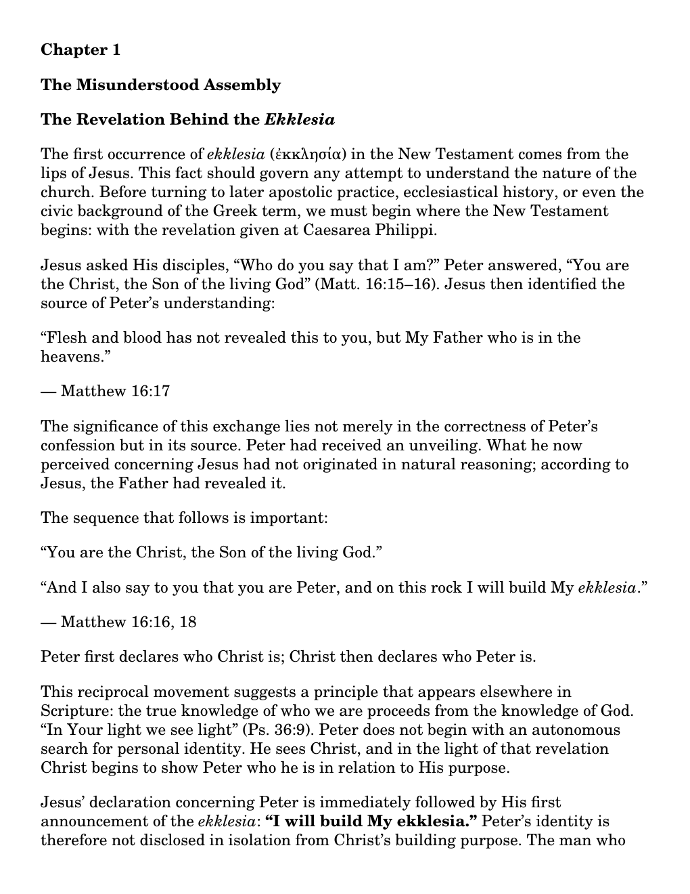
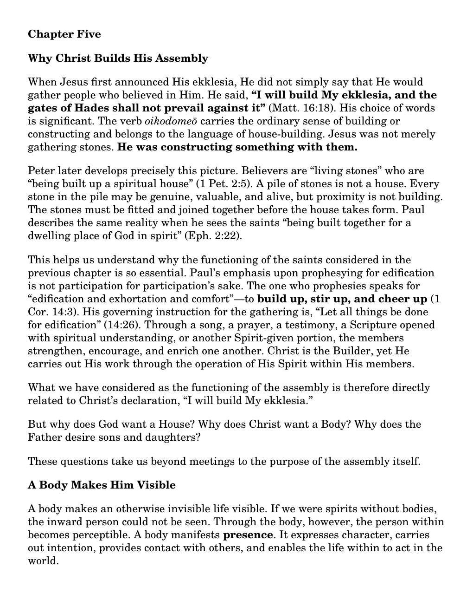

Interactive Digital Flip-Book Edition
The Misunderstood Assembly
Rediscovering What Christ Meant When He Said, “I Will Build My Ekklesia”
What did Christ have in view when He said, “I will build My ekklesia”? This booklet returns to that declaration and follows the New Testament’s living picture of Christ’s building: living stones, God’s House, the Body of Christ, locality, maturity, stewardship, mutual supply, and the functioning of the saints.
- 76 full-size pages
- 8.5 × 11-inch format
- Animated page-turning edition
By Terry Kashian
Published by Kingdom Light Publishers
$10
Purchase
Purchase the Digital Flip Book
- Open Zelle through your bank or credit union.
- Send $10 to KingdomLight.
- Confirm the recipient appears as CHURCH IN TUCSON.
- Enter ASSEMBLY – your name in the memo.
- After payment, send your name, Zelle payment name, and delivery email address.
Delivery: Manually confirmed digital purchase. The complete 76-page edition is not stored on this public page.
Inside the Book
Preview Selected Pages
Selected pages from the booklet’s exploration of Christ’s ekklesia, the order of the assembly, and the functioning of the saints.

